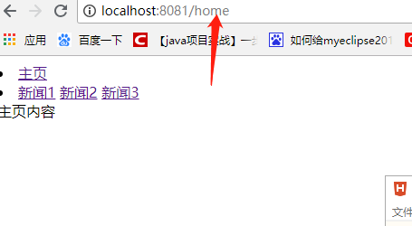
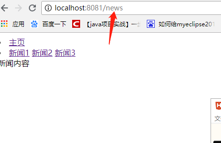
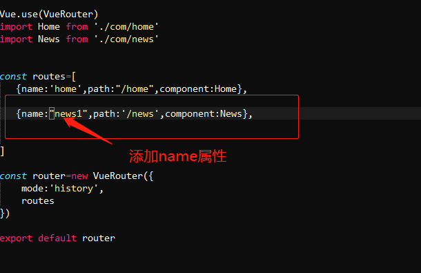
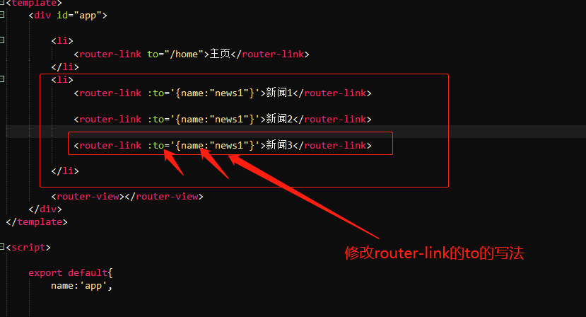

在配置路由的时候，router.js里面router的规则：routes数组里面都是用对象的形式进行配置路由的选项，例如：
routes[
{path:'/home',component:Home},
{path:'news',component:news}
]
在页面使用的时候，使用router-link或者使用click事件的方式写在事件函数里面使用push跳转
此时，每点击一次，浏览器地址栏都会显示当前组件的路由信息，如下图：


但是如果有多个链接都需要显示同一个路由信息的时候，就没法配置，所以可以在路由规则routes的选项里面加一个name属性进行配置，然后再修改router-link属性to的写法或者执行的push()方法中的选项进行动态匹配：
1、给路由规则添加name属性：

路由规则里面需要动态配置的选项添加一个name属性。
2、修改router-link标签写法:

将router-link写成< link-link :to="{'name:xxx'}"> 的形式，:to的值就是路由规则中的name。
此时，浏览器显示的url还是路由规则中path的值，但是，每个router=link点击时候的to中的name值确是不同的，这样可以通过配置传参的方式动态配置path的值，这样做的好处是在修改配置的时候。